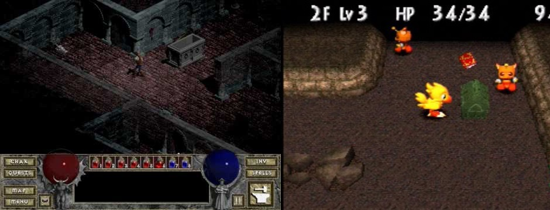
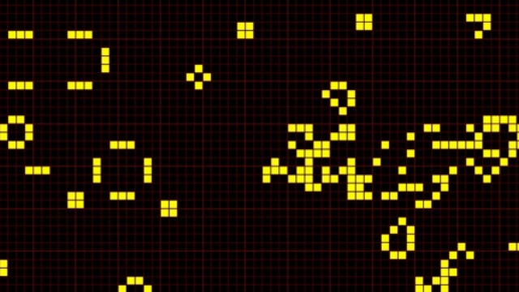
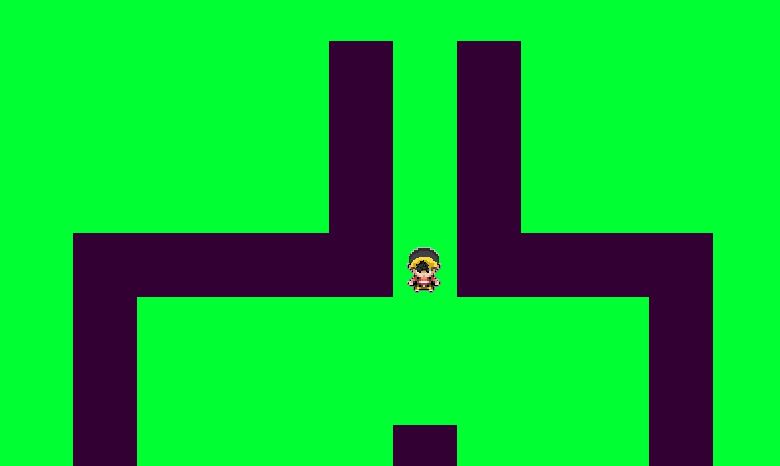
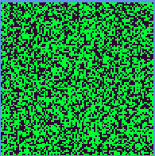
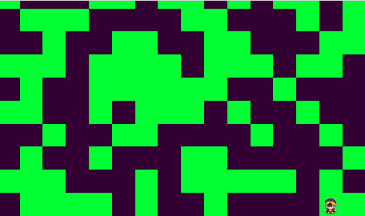
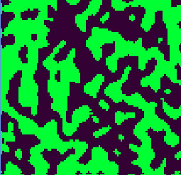
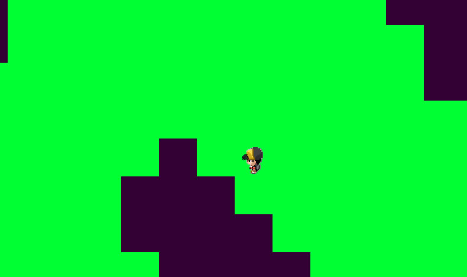

Mario Toledo
Mario Toledo
Wordle Clone using Meteor JS
This is an experiment I made about 5 years ago, and I decided to add here as a reference. This project uses Moore's Game of Life to generate random maps in a dungeon crawler game using cellular automata. The game was developed using Microsoft's XNA, because, in the time this experiment was made, it was still a good choice for 2D game creation. But nowadays, this experiement can be used easily.
A brief introduction
While fantasy RPGs are already a genre division in the eletronic gaming universe, there are sub-genres that greatly changes the mechanics of a game. Among them, dungeon crawlers, which consists of controlling heroes through a maze inside a dungeon made of rooms connected by corridors.
 In the left: Diablo 1, one of the successful games of its kin. In the right: Chobobo's Dungeon, for Playstation 1
It is common that in Dungeon Crawler games, the player is unaware of the map that he is entering for the first time. The dungeons have several levels, and at each level, the player must become familiar with the place.
Usually, dungeons are created by a level design team, that changes the environment to their liking. However, this limits the levels to a restricted number, and also ensures that the player easily gets used to the other levels of the dungeon, making their game easier.
To improve the player's experience and to ensure an unlimited number of levels, it is suggested to use random map generation. But how to do this in a way that the player can identify small patterns and proceed through the stages from the learning of previous levels?
Cellular Automata and The Game of Life
According to (AGUIAR; COSTA, 2000), Cellular Automata are simple mathematical models of natural systems. They are made up of a mesh, or reticulated, of identical and discrete cells, where each cell has its value over a finite set, for example, of integer values. The values evolve in discrete time steps according to deterministic rules that specify the values of each cell in terms of the values of neighboring cells.
For two-dimensional cellular automata, the best known model was the one developed by John Conway, in the so-called "Game of Life", where cells evolve from an initial state based on rules that simulate their birth, survival and death [2]:
- Any living cell with less than two living neighbors dies of loneliness;
- Any living cell with more than three living neighbors dies of over-population;
- Any dead cell with exactly three living neighbors becomes a living cell;
 Cells evolving in an implementation of the Game of Life
The evolution of a cell into a cellular automaton depends on its neighborhood, composed of cells adjacent to the current cell and the cell itself. The Game of Life uses the model of Moore, in which the neighboring cells are always the 8 cells are around a certain cell.
Moore's model
The Project
In this project, we created the basic structure of a dungeon crawler game, where a hero can be controlled by the keyboard, respecting the laws of the map, which contains spaces that can not be advanced. You may fork this version at the "basic_project" branch.
For the generation of the map, the class Tile was created to store information of each square of the Dungeon, considering that it has a format of an array. In general, a Tile represents the smallest space in a dungeon, storing not only its relative position on the map, but also its texture and other states.
The Map class is responsible for generating the Dungeon Map and loading information for each Tile. The primary structure of the map is composed of an array of integers, which indicates the state of each Tile. This will allow to identify if a Tile is "walkable" or not (in the future, we can assign other states).
public class Map
{
private int[,] map = {
{0, 0, 0, 0, 0, 0, 0, 0, 0, 0, 0, 0, 0, 0, 0, 0, 0, 0, 0, 0, 0,},
{0, 0, 2, 0, 0, 0, 0, 0, 0, 1, 0, 1, 0, 0, 0, 0, 0, 0, 0, 0, 0,},
{0, 0, 0, 0, 0, 0, 0, 0, 0, 1, 0, 1, 0, 0, 0, 0, 0, 0, 0, 0, 0,},
{0, 0, 0, 0, 0, 0, 0, 0, 0, 1, 0, 1, 0, 0, 0, 0, 0, 0, 0, 0, 0,},
{0, 0, 0, 0, 0, 1, 1, 1, 1, 1, 0, 1, 1, 1, 1, 0, 0, 0, 0, 0, 0,},
{0, 0, 0, 0, 0, 1, 0, 0, 0, 0, 0, 0, 0, 0, 1, 0, 0, 0, 0, 0, 0,},
{0, 0, 0, 0, 0, 1, 0, 0, 0, 0, 0, 0, 0, 0, 1, 0, 0, 0, 0, 0, 0,},
{0, 0, 0, 0, 0, 1, 0, 0, 0, 0, 1, 0, 0, 0, 1, 0, 0, 0, 0, 0, 0,},
{0, 0, 0, 0, 0, 1, 0, 0, 0, 0, 0, 0, 0, 0, 1, 0, 0, 0, 0, 0, 0,},
{0, 0, 0, 0, 0, 1, 0, 0, 0, 0, 0, 0, 0, 0, 1, 0, 0, 0, 0, 0, 0,},
{0, 0, 0, 0, 0, 1, 0, 0, 0, 0, 0, 0, 0, 0, 1, 0, 0, 0, 0, 0, 0,},
{0, 0, 0, 0, 0, 1, 0, 0, 0, 0, 9, 0, 0, 0, 1, 0, 0, 0, 0, 0, 0,},
{0, 0, 0, 0, 0, 1, 0, 0, 0, 0, 0, 0, 0, 0, 1, 0, 0, 0, 0, 0, 0,},
{0, 0, 0, 0, 0, 1, 0, 0, 0, 0, 0, 0, 0, 0, 1, 0, 0, 0, 0, 0, 0,},
{0, 0, 0, 0, 0, 1, 0, 0, 0, 0, 0, 0, 0, 0, 1, 0, 0, 0, 0, 0, 0,},
{0, 0, 0, 0, 0, 1, 0, 0, 0, 0, 0, 0, 0, 0, 1, 0, 0, 0, 0, 0, 0,},
{0, 0, 0, 0, 0, 1, 0, 0, 0, 0, 0, 0, 0, 0, 1, 0, 0, 0, 0, 0, 0,},
{0, 0, 0, 0, 0, 1, 0, 0, 0, 0, 0, 0, 0, 0, 1, 0, 0, 0, 0, 0, 0,},
{0, 0, 0, 0, 0, 1, 1, 1, 1, 1, 1, 1, 1, 1, 1, 0, 0, 0, 0, 0, 0,},
{0, 0, 0, 0, 0, 0, 0, 0, 0, 0, 0, 0, 0, 0, 0, 0, 0, 0, 0, 0, 0,},
{0, 0, 0, 0, 0, 0, 0, 0, 0, 0, 0, 0, 0, 0, 0, 0, 0, 0, 0, 0, 0,},
{0, 0, 0, 0, 0, 0, 0, 0, 0, 0, 0, 0, 0, 0, 0, 0, 0, 0, 0, 0, 0,},};
public Tile[,] Tiles { get; private set;
public Map(ContentManager contentManager)
{
Tiles = new Tile[map.GetLength(1), map.GetLength(0)];
for (int y = 0; y < map.GetLength(0); y++)
{
for (int x = 0; x < map.GetLength(1); x++)
{
Tile tile = new Tile()
{
Frame = new Rectangle(x * Settings.TILE_WIDTH, y * Settings.TILE_HEIGHT, Settings.TILE_WIDTH, Settings.TILE_HEIGHT),
IsWalkable = map[y, x] == 0 || map[y, x] == 2,
Texture = contentManager.Load(map[y, x] == 0 || map[y, x] == 2 ? "tile1" : "tile2"),
MapPosition = new Vector2(x, y)
};
if (map[y, x] == 2)
starterTile = tile;
Tiles[x, y] = tile;
}
}
}
} When we run the project, we have a base structure that allows us to focus on the implementation of map generation based on the Game of Life rules.

Applying Cellular Automata and The Game of Life rules in the project
At first, our map structure is managed by an array of integers, where elements of values 0 indicate non-walking tiles, while elements of values 1 indicate walkable tiles.
The application of the rules of the game of life suggests an initial configuration. To do this, our first step in dungeon generation is to create a random map, and to do so, we assign a chance for each cell to become a "walkable" element. That is, the chance of each cell being a "living" cell.
public static float AUTOMATA_CHANCE_TO_STAY_ALIVE = 0.45f;With this, we generate random values from 0 to 1, and assign a "live" or "dead" value to each map cell.
for (int x = 0; x < map.GetLength(0); x++)
{
for (int y = 0; y < map.GetLength(1); y++)
{
double r = new Random().NextDouble();
if (NumericHelper.GetRandomNumber() < Settings.AUTOMATA_CHANCE_TO_STAY_ALIVE)
{
map[y, x] = 1;
}
}
}By running the project, we can see that the map contains scattered elements without any kind of pattern.


From the map generated above, we can apply the rules of the game of life to generate new cells. For this, we first need to create a way to identify living or dead cells that are neighbors to a given cell. In our code, we created a class called *GameOfLifeHelper* to focus methods that will allow to apply the rules of the game of life to our map. In this way, we created a method called *GetMooreNeighborsAlive*, which counts the number of live cells around a unique position of the map and the actual map itself.
public static int GetMooreNeighborsAlive(int x, int y, int [,] map){
int numberOfAliveNearbyCells = 0;
for(int i = -1; i < 2; i++){
for(int j = -1; j < 2; j++){
int nearbyX = x + i;
int nearbyY = y + j;
if(i == 0 && j == 0){
break;
} else if(nearbyX < 0 || nearbyY < 0 || nearbyX >= map.GetLength(0) || nearbyY >= map.GetLength(1)){
numberOfAliveNearbyCells++;
} else if(map[nearbyX, nearbyY] == 1){
numberOfAliveNearbyCells++;
}
}
}
return numberOfAliveNearbyCells;
}Now that we can count the neighboring living cells, we can apply the transition rules. In the Game of Life, the cells are changed simultaneously, from n iterations. For this to happen, in our *DoTransitionFromOldMap* method, we apply the rules from a map reference without changes.
public static int[,] DoTransitionFromOldMap(int[,] oldMap)
{
int[,] newMap = new int[oldMap.GetLength(0), oldMap.GetLength(1)];
for (int x = 0; x < oldMap.GetLength(0); x++)
{
for (int y = 0; y < oldMap.GetLength(1); y++)
{
int numberOfAliveCells = GetMooreNeighborsAlive(x, y, oldMap);
if(oldMap[x, y] == 1){
if (numberOfAliveCells < Settings.AUTOMATA_NUMBER_OF_ALIVE_NEIGHBORS_ALLOWED)
{
newMap[x, y] = 1;
}
else{
newMap[x, y] = 0;
}
}
else{
if (numberOfAliveCells > Settings.AUTOMATA_NUMBER_OF_DEAD_NEIGHBORS_ALLOWED)
{
newMap[x, y] = 0;
}
else{
newMap[x, y] = 1;
}
}
}
}
return newMap;
}In our project, we have defined a total number of iterations that will occur on the map.
public static int GAME_OF_LIFE_NUMBER_OF_STEPS = 6;Next, we make a loop that will make the interactions on the map.
for (int i = 0; i < Settings.GAME_OF_LIFE_NUMBER_OF_STEPS; i++)
{
map = GameOfLifeHelper.DoTransitionFromOldMap(map);
}After running project, we have a map composed of cells grouped in greater quantities, like small caves of a single floor of the dungeon. With a greater number of interactions, we managed to leave these caves bigger and smaller paths between the map.


Future works
There are several ways to help improve this project. Although the generation of random maps is possible with the use of cellular automata, many of the "caves" of the map are not interconnected. It is necessary to implement a way to identify caves, and from there, identify the caves that are not connected.
With the identification of caves, it is easy to insert enemies on the map. It is also suggested to insert start and end points on the map in such a way that these cells reach the maximum possible distance within the screen.
Also: I do wanna create this project using Phaser.JS, so we can try to modify the variables and see the difference in real time.
References
[1] AGUIAR, M. S. de; ROCHA COSTA, A. C. da. Automatos celulares para análise da monotonicidade da declividade de áreas geológicas. , [S.l.], 2001.
[2] Gardner, Marin - MATHEMATICAL GAMES The fantastic combinations of John Conway's new solitaire game "life"
[3] http://ppginf.ucpel.tche.br/TI-arquivos/2007/PPGINF-UCPel-TI-2007-2-01.pdf
[4] http://blog.monnet-usa.com/?cat=18